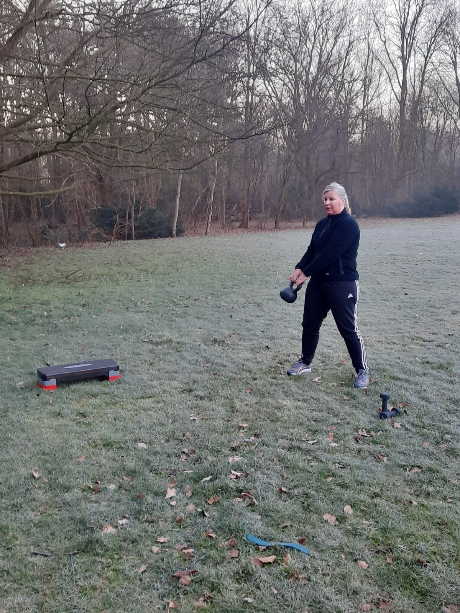

De overgang is geen ziekte, maar je lichaam verandert wél merkbaar. Veel vrouwen krijgen te maken met opvliegers, slechter slapen, stemmingswisselingen, stijve gewrichten en een tragere stofwisseling. Het goede nieuws: beweging is een van de krachtigste middelen die je zelf in handen hebt om die klachten te temperen. Deze gids legt uit wat er gebeurt in je lichaam en hoe je daar met training slim op inspeelt.

Wat gebeurt er in je lichaam tijdens de overgang?
In de jaren rond je laatste menstruatie daalt de aanmaak van oestrogeen en progesteron. Dat heeft meer gevolgen dan alleen het stoppen van je cyclus:
- Spiermassa neemt sneller af. Oestrogeen speelt een rol bij spierbehoud. Minder spieren betekent een lagere ruststofwisseling, waardoor je sneller aankomt bij hetzelfde eetpatroon.
- Botdichtheid daalt. Na de menopauze verliezen vrouwen relatief snel botmassa, met een verhoogd risico op osteoporose.
- Vetopslag verschuift. Vet verplaatst zich vaker naar de buik, wat samenhangt met een hoger risico op hart- en vaatziekten.
- Slaap en stemming wisselen. Hormoonschommelingen beïnvloeden je nachtrust, energie en humeur.
Waarom juist krachttraining nu loont
Als er één trainingsvorm is die tijdens en na de overgang het verschil maakt, is het krachttraining. Het remt spierverlies af en kan spiermassa zelfs laten toenemen, het belast je botten waardoor botafbraak wordt afgeremd, en het houdt je stofwisseling op peil. Daarnaast verbetert krachttraining je houding, balans en zelfvertrouwen.
Twee korte krachtsessies per week, gericht op grote spiergroepen (benen, rug, borst, core), zijn al effectief. Zwaar hoeft niet meteen: de opbouw is belangrijker dan het startgewicht.
Kracht, balans en mobiliteit: de drie pijlers
Onderzoek naar fit ouder worden wijst steeds dezelfde drie pijlers aan: kracht, balans en mobiliteit. Een goed trainingsprogramma voor vrouwen in en na de overgang combineert alle drie, aangevuld met rustige cardio voor hart en conditie.
Wat helpt tegen welke klacht?
| Klacht | Wat helpt |
|---|---|
| Opvliegers | Regelmatige matig-intensieve beweging; overdrijf niet vlak voor het slapen |
| Slecht slapen | Beweging overdag (liefst buiten), ontspanningsoefeningen, vast slaapritme |
| Gewichtstoename | Krachttraining voor spierbehoud, dagelijks bewegen, eiwitrijke voeding |
| Somberheid en prikkelbaarheid | Cardio en buitenlucht; sporten met een maatje of trainer voor structuur |
| Stijve spieren en gewrichten | Mobiliteitswerk, yoga of pilates, rustig opgebouwde krachttraining |
| Botontkalking | Krachttraining en botbelastende beweging zoals stevig wandelen |
Zo bouw je verstandig op
- Begin waar je bent. Heb je jaren weinig gedaan? Start met twee keer per week 30 tot 45 minuten en bouw rustig uit.
- Combineer. Twee krachtsessies, aangevuld met wandelen of fietsen op andere dagen, is een uitstekende basis.
- Neem hersteltijd serieus. Herstel gaat na je 45e langzamer. Plan rustdagen tussen intensieve sessies.
- Eet voldoende eiwit. Spieropbouw vraagt bouwstoffen; verdeel eiwit over de dag.
- Blijf consistent. Resultaat komt uit maanden volhouden, niet uit weken sprinten. Een vaste wekelijkse afspraak helpt enorm.
Begeleiding kiezen: waar let je op?
Trainen kan uitstekend zelfstandig, maar juist in deze levensfase is goede begeleiding veel waard. Een trainer die de overgang begrijpt, stemt intensiteit, herstel en oefeningskeuze af op jouw dag en energie. Waar let je op?
- Aantoonbare ervaring met vrouwen in de overgang
- Een intake waarin klachten, medicijngebruik en historie besproken worden
- Geleidelijke opbouw met aandacht voor gewrichten en belastbaarheid
- Aandacht voor leefstijl: slaap, stress en voeding
Wil je met een vrouwelijke trainster werken die deze fase zelf kent of er dagelijks mee werkt? Kijk dan eens bij LET'S DO IT Personal Training: hun trainsters begeleiden al sinds 2007 vrouwen tijdens en na de overgang, gewoon bij je thuis of buiten. Zoek je vooral rustige, opbouwende begeleiding met medische kennis in het team, bijvoorbeeld omdat je ook gewrichtsklachten hebt? Dan is Jouw Personal Trainer aan Huis een sterke optie, met fysiotherapeuten en leefstijlcoaches in het team en veel ervaring met 40- en 50-plussers.
Veelgestelde vragen
Kan ik nog beginnen met krachttraining als ik nooit gesport heb?
Ja. Het lichaam reageert op elke leeftijd op krachttraining. Begin licht, focus op techniek en bouw rustig op, het liefst met begeleiding in de eerste maanden.
Moet ik anders trainen dan vóór de overgang?
De basis blijft gelijk, maar herstel vraagt meer aandacht, krachttraining wordt belangrijker en heel intensieve sessies laat op de avond kunnen je slaap verstoren. Luister naar je lichaam en varieer.
Helpt sporten ook tegen opvliegers?
Vrouwen die regelmatig bewegen rapporteren gemiddeld mildere klachten en een beter humeur. Beweging is geen wondermiddel, maar wel een van de weinige dingen die op vrijwel alle overgangsklachten tegelijk een positief effect hebben.